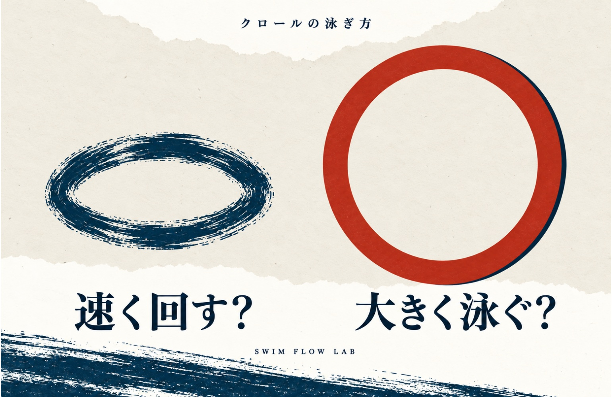
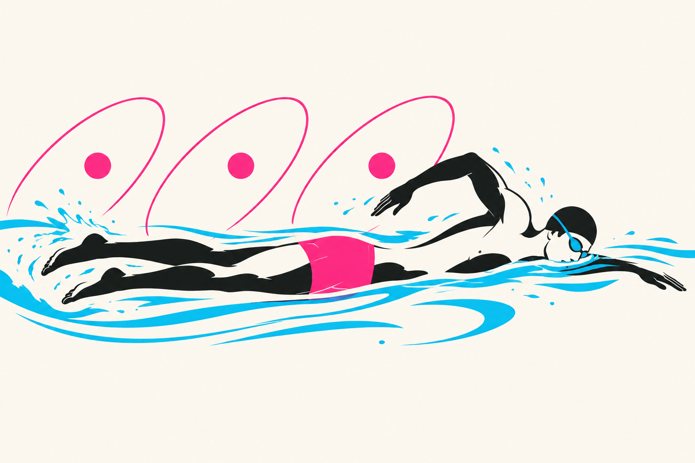
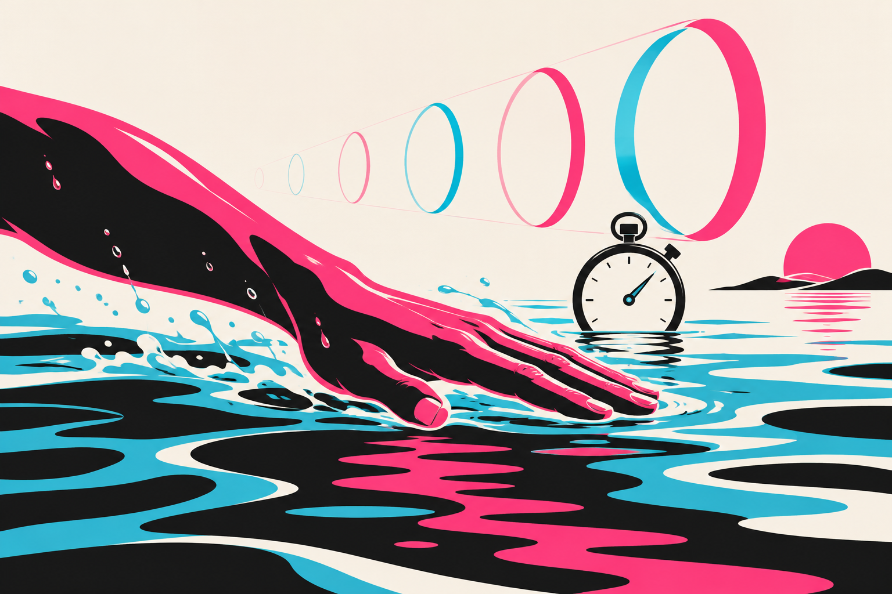
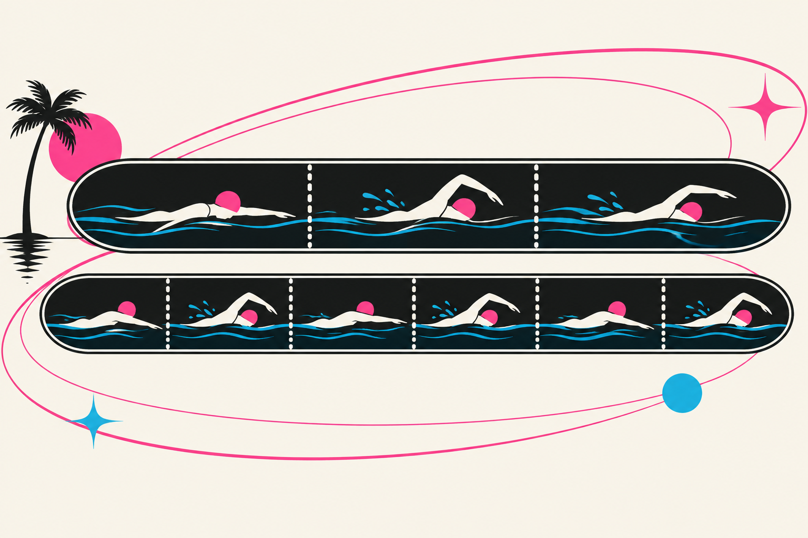
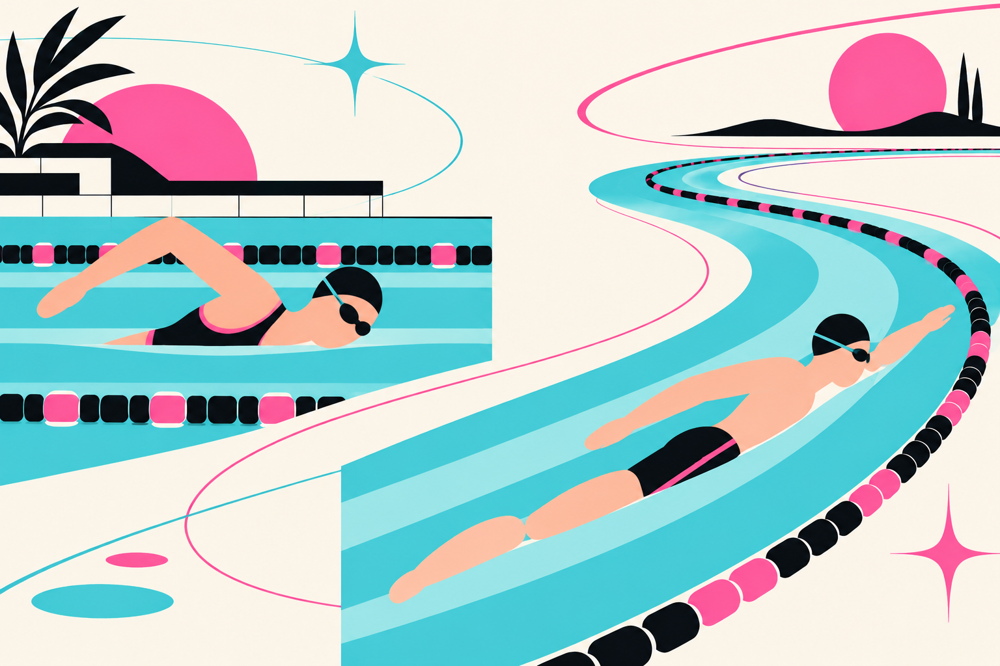
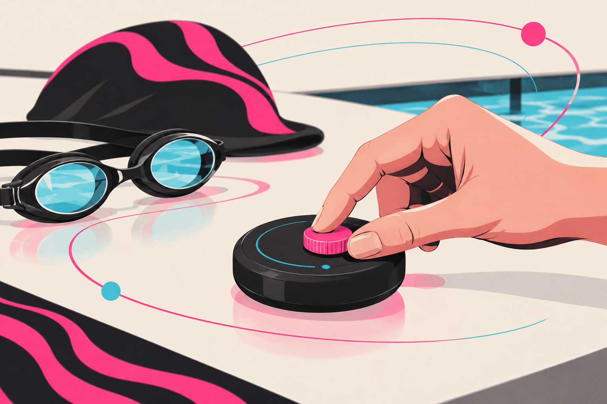
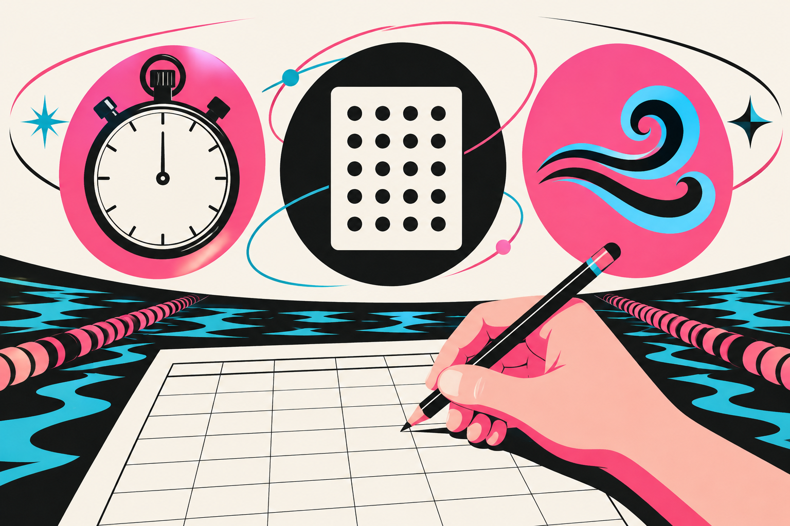

SWIMMING RESEARCH / 02
大きく泳ぐ？ 速く回す？ 自分に合う泳ぎの見つけ方
回転数と1かきで進む距離を一緒に考える

腕を速く回したのに、時計を見るといつもと変わらない。反対に、ひとかきを大きくすると、少ない回数で泳げるけれどタイムは遅くなる。クロールを練習していると、どちらを目指せばよいのか迷うことがあります。
この二つは、別々の悩みに見えてつながっています。回す速さを変えると、1かきの間に身体が進む距離も変わるからです。「回数を増やす」「回数を減らす」のどちらかだけを上達の目印にすると、泳ぎの変化を見落としてしまいます。
では、自分は何を変えればよいのでしょうか。まずは、腕を動かす速さと身体が進む速さの違いを整理し、そのうえで次の練習で試すことを考えていきましょう。
1 腕の回数と進む速さはどうつながる？
同じ場所で腕だけを速く動かしても、身体が前へ進まなければ速く泳いだことにはなりません。クロールの速さを考えるには、「一定の時間に何回かくか」と「その1回でどれだけ身体が進むか」の両方が必要です。

ここで数え方を一つだけそろえます。本記事では、右手が水に入ってから次に右手が入るまで、左右を合わせて1周期と呼びます。1分間に何周期行うかがストローク頻度、1周期の間に身体が進む距離がストローク長です。ストローク長は腕の長さでも、手を前に伸ばした長さでもありません。
図で確かめる
1周期は「右手」から「次の右手」まで
最初の右手は、数え始める目印です。右手→左手→次の右手までをひとまとまりとして1周期。その間に身体が進んだ距離を見ます。右・左・右を「3周期」とは数えません。
が入水
ここから
が入水
途中
が入水
ここまで
●進む向き →終わりの位置
●
●から●までが、身体の進んだ距離です。
同じ泳区間で測れば、1分間に進む距離は「1分間の周期数 × 1周期で進む距離」で表せます。回数が増えても、1周期の進みが小さくなれば、その増加を打ち消すことがあります。反対に、ひとかきで長く進んでも、次のひとかきまでの時間が長くなれば、速度が上がるとは限りません。
同じ「回数」でも、見るものは違う
何を知りたいかで、記録を選ぶ
同じ区間の回数 左右の数え方をそろえる
時間あたりの回数 テンポ・頻度
身体が移動した距離 ストローク長
同じ区間にかかった時間
つまり、回数は泳ぎを評価する点数ではなく、速さが変わった理由を考える手掛かりです。「速く回せた」「少ない回数で着けた」のあとに、「身体は前より速く進んだか」を加えると、練習の見方が変わります。
2 回転を増やしても速くならなかったのはなぜ？
「もっと速く回せば速くなるはず」を、実際に確かめた実験があります。男子泳者8人がまず20mクロールを全力で泳ぎ、そこでのストローク頻度を基準に、その後は100％、110％、120％の頻度を指定されて泳ぎました。結果は、頻度を増やしても泳速度の有意な差は認められませんでした。［1］
図で確かめる
増やしたのは「回転数」の割合
100％は、最初の全力泳で測った回転数です。110％なら1割多く、120％なら2割多く回す指定です。泳ぐ速さや力の強さを、1割・2割増やしたという数字ではありません。
割合を読むための仮の例：同じ時間に10周期を基準にする
●1つ＝1周期。時間は3条件で同じです。

20％増やした条件では、ストローク後半の手の迎え角と推進力の低下も報告されています。迎え角は、手と相対的な水の流れとの角度です。腕を速く動かす一方で、水に対する手の向きや前へ進める力の出方も変わっていたわけです。この実験では、回転を増やした分が泳ぐ速さの増加にはつながりませんでした。
「差が認められない」の読み方
「有意な差が認められない」とは、この実験では、条件による差があると言い切るだけの統計的な根拠が得られなかった、という意味です。全員がぴったり同じ速さだった、という意味ではありません。
回転を増やした実験で分かったこと
男子泳者8人・20mクロール
全力泳時の頻度を基準に 100％・110％・120％
泳速度に有意差なし
回しやすさだけでなく 同じ区間のタイムも見る
全力泳の頻度をさらに増やした実験です。余裕のある泳ぎで少し上げる場合とは区別します。
ここから考えたいのは、回転数を上げる練習をやめることではなく、回しやすさだけでテンポを選ばないことです。自分も腕ばかり忙しくなり、タイムが変わらないなら、その場でさらに回転を足す前に、普段のテンポへ戻して比べる価値があります。急いだときのほうが進みを失っていないか、確かめるためです。
ただし、タイムと回数だけから「あなたも手の角度が悪い」とは決められません。また、この実験は全力泳の頻度をさらに増やしたものです。余裕のある泳ぎから少しテンポを上げる場合や、練習して新しいテンポに慣れた場合まで、速くならないと示したわけではありません。今の試行の結果と、練習を続けた先の可能性は分けて考えます。
3 大きく泳げば解決する？
では、回転を抑えてひとかきで長く進めばよいのでしょうか。ここでも、回数だけでは答えが出ません。仮にAが毎分30周期で1周期に2m、Bが毎分40周期で1周期に1.5m進むとします。どちらも1分間に60m。Aは大きく、Bは細かく泳いでいても、速さは同じです。
図で確かめる
回数が違っても、同じ時間で同じ距離へ
1分の話を6秒分だけ取り出してみます。Aは3周期で6m、Bは4周期で6m。回数と1周期の距離は違っても、同じ6秒で同じ6mへ着くので、この仮の例では平均の速さは同じです。
計算の説明用の仮の例／どちらも6秒間
1区画＝1周期で進む距離。AもBも1分に換算すると60mです。

この例で分かるのは、1周期の距離が短くなっただけでは失敗と決められないことです。回転数と1周期の距離を掛け合わせた値が大きくなれば、速くなる組み合わせもあります。逆に、回数を減らせてもタイムが遅くなったなら、速さを狙う練習では、その減少だけを成果にはできません。
「大きく泳ぐ」を意識している人は、手を遠くへ置けたかに加えて、その間に身体も進んでいるかを見てみてください。回数を減らすために次の動作を待っていないか。待つ時間を少し短くすると進み方はどう変わるか。指導者や映像の助けを借りれば、単なる回数の違いを動きの違いへ結びつけられます。長く伸びているように見えることと、速く進んでいることは別です。
また、隣の人より回数が多いことだけを直す必要もありません。若い短距離泳者38人を分析した研究では、身長、水中で手を動かす時間、利き側の平均推進力などが泳速度を説明する要素に含まれました。回数の違いには、身体や力の出し方の違いも関わります。これは関連を調べた研究で、特定の回数へ変える練習の効果を示したものではありません。自分を見直すときは、他人の少ない回数より、まず自分の変更前後を比べましょう。［2］
関連と練習の効果は別
「速い人にはどんな特徴があるか」を調べることと、「自分の回数を変えると速くなるか」を試すことは別です。他の人の特徴が見つかっても、それをそのまま自分の目標回数にはできません。
4 短く速く泳ぐ日と長く泳ぐ日で選び方を変える
同じタイムで泳げる二つのテンポが見つかったとき、何を基準に選べばよいでしょうか。ここで必要なのが、今回の目的です。短い区間で速さを狙うのか、一定のペースで長く泳ぎたいのか。目的が違えば、残しておきたい泳ぎも変わります。

競技の高いレベルでも、組み合わせは一つではありません。欧州短水路選手権の男女324人、自由形50〜1500mを調べた研究では、回転数・1周期の距離と泳速度の関係は競技距離によって異なり、メダリストに集団の典型と異なる組み合わせも見られました。トップ選手の回転数を一つ取り出して、全員の目標にする材料ではありません。［3］
練習へ置き換えるなら、速さを狙う日は、その区間を前より速く泳げたかを確かめます。長く泳ぐ日は、狙うペースを保ちながら呼吸や動きに余裕があるかも重視します。短い距離でタイムがよかったテンポを、長い距離にもそのまま採用する必要はありません。
泳ぐ目的で、見るところを変える
他人の回数より、自分の変更前後
同じ区間へ 前より速く着けたか
狙うペースで 呼吸と動きに余裕があるか
逆に、今のテンポで目的の泳ぎができているなら、他人の数字に合わせるためだけに変えなくて構いません。研究から持ち帰れるのは新しい正解の数値ではなく、比べる条件を自分の目的へ戻す視点です。
5 次の練習ではテンポだけを少し変えてみる
ここからは、研究を踏まえた本記事の試し方です。まず「腕を急いでもタイムが変わらない」「大きく泳ぐと遅くなる」など、今の困り事を一つ選びます。比較するのは、普段の泳ぎとテンポを少しだけ変えた泳ぎ。ここでいう「少し」は、普段の呼吸を続け、選んだ距離を無理なく泳ぎ切れる範囲の違いです。変えた途端に力むなら、変化を小さくします。腕を急いでいる人なら少し落とす、伸びを待ちすぎていると感じる人なら少し上げる方向から試せます。原因を決めつけるのではなく、変えるとどうなるかを確かめます。

普段から余裕を持って泳げる距離を使い、壁を蹴る強さ、呼吸の仕方、キックの意識をできるだけそろえます。例えば25mは実施しやすい一例で、研究が決めた最適距離ではありません。十分に休み、疲れが残るときは別の機会にします。テンポと同時に手の形やキックまで変えないほうが、違いを読み取りやすくなります。
残すものは、同じ区間のタイム、決めた数え方での回数、泳ぎ終わったときの余裕です。数えやすければ左右それぞれの入水を1回としても構いません。両方で数え方を統一し、研究の「周期／分」とは混ぜないようにします。自分で数えると泳ぎが変わるなら、指導者などに頼みましょう。
変えるのは、テンポだけ
同じ条件で普段の自分と比べる
- 条件をそろえる01
距離・休憩・壁蹴りをそろえる
- 普段を記録02
タイム・回数・余裕を見る
- テンポを少し変える03
手の形やキックは一緒に変えない
- 結果を比べる04
速さと無理のなさを確かめる
25m全体の回数には、壁蹴りや滑走の影響も入ります。25mを回数で割った値を、そのまま腕で泳ぐ区間のストローク長とは呼べません。最初は厳密な数値をそろえることより、同じ条件で比べ、どちらが速かったか、余裕はどうだったかを確かめるだけで十分です。泳いでいる区間を詳しく測る必要が出たら、そこを指導者と切り分けます。
図で確かめる
25mには、腕でかかずに進んだ部分も入る
壁を蹴って進んだ分まで、腕の1周期で進んだ距離へ数え込まないようにします。腕の働きを詳しく見るなら、壁蹴り・滑走と、腕で泳ぐ区間を分けます。
腕でかかずに
進む部分
周期と身体の移動を
対応させる
区間の幅は模式。内訳の距離を測った図ではありません。
タイム・回数・余裕を一緒に比べる
架空の記入例：同じ25m
時間：25秒 腕：20回 呼吸に余裕
時間：24秒 腕：22回 呼吸に余裕
回数は増えても、早く着き、余裕も保てた例です。次回も試す候補にします。
25mには壁蹴りや滑走も含まれます。25m÷腕の回数を、そのまま泳区間のストローク長にはしません。
6 結果を見て次に試すことを選ぶ
速くなり、動きや呼吸の余裕も大きく崩れない。その場合は、新しいテンポを次の練習の候補にします。すぐにいつもの泳ぎを全部置き換えず、別の機会にも同じ傾向があるか確認してください。長く泳ぐために使うなら、その距離でも保てるかを改めて見ます。

回数だけ増えてタイムは変わらない。その場でさらに速く回すのは一度やめ、普段のテンポを比較の基準へ戻します。回数は減ったけれど遅くなった。速さを狙うなら、回数を減らすことを優先せず、待つ意識を少し弱めた泳ぎも比べます。どちらも新しい動きが将来役に立たないという判定ではありません。まず、今起きた変化を確かめるための選択です。
速くなったが強く力んだ。変更を少し小さくして比べるか、なぜ力むのかを指導者に見てもらいます。反対に、同じ速さで余裕が増えたなら、長く泳ぐ目的では残したい候補です。どちらにも明らかな違いがなければ、無理に優劣を決める必要はありません。順番を替えた別の機会に、もう一度比べてみましょう。
困った結果から、次の一手へ
一度の結果で泳ぎ方を固定しない
- 回数増でもタイム不変
- 普段のテンポへ戻して比較
- 回数減で遅くなった
- 待つ意識を少し弱めて比較
- 速いが強く力む
- 変更を小さくする
こうなったら、次はこう比べる
泳ぐ目的に合わせて選ぶ
- 速くなり余裕もある
- 次回も試す候補にする。長い距離では改めて比較
- 回数だけ増えタイムは同じ
- さらに回さず、普段のテンポと比べ直す
- 回数は減ったが遅い
- 速さが目的なら、待つ意識を少し弱めて比較
- 速いが強く力む
- 変更を小さくするか、力む場面を指導者と確認
- 同じ速さで楽になった
- 長く泳ぐ目的なら候補にする
- 違いがはっきりしない
- 別の機会に順番を替えて比較
大きく泳ぐことと速く回すことは、どちらかを選び抜く二択ではありません。今の自分が、泳ぎたい距離をどう進めるか。その答えを探すために回数を使えば、数字をそろえる練習から、自分の泳ぎを選ぶ練習へ変えていけます。
参考資料と確認範囲
- Kogaら（2024／オンライン2020）Effects of exceeding stroke frequency of maximal effort on hand kinematics and hand propulsive force in front crawl
原著抄録の対象・操作・結果を確認 初回は全力 以後は頻度指定と記載 指定試行の努力度の詳細は未確認 原著全文は未精読 - Moraisら（2022）Understanding the Role of Propulsion in the Prediction of Front-Crawl Swimming Velocity and in the Relationship Between Stroke Frequency and Stroke Length
公開原著PDFの抄録・方法・限界を確認 抄録と参加条件に若年の自由形短距離専門泳者と明記 - Stauntonら（2025）Stroke rate–stroke length dynamics in elite freestyle swimming
原著の抄録・導入・対象を確認 メダリストの組合せが全体と異なる記述は抄録Resultsにあり
図は本文の理解を助ける独自の模式図です 論文の測定図や実験画像の転載ではありません